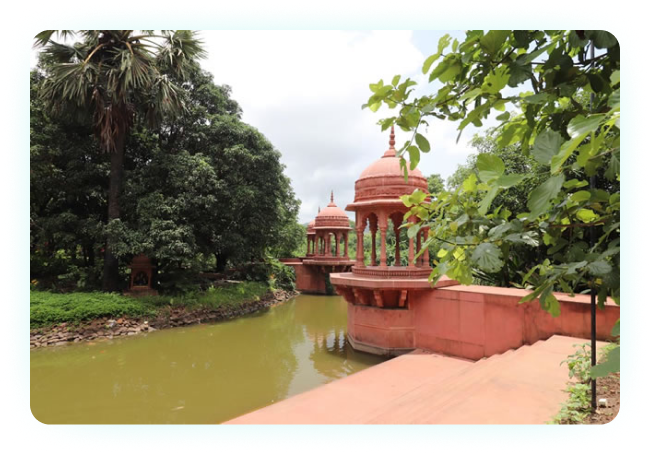

<section class="yamuna_arti">
    <div class="container">
        <h5>Yamuna Aarti</h5>
        <div class="d-lg-flex align-items-center justify-content-between custom-margin ">
            <div class="yamuna_img">
                <!--  -->
                
                <span class="author">Yamuna River</span>
            </div>
            <div class="yamuna-text">
                <p>
                    The Yamuna sometimes called Jamuna is the largest tributary river of
                    the Ganges (Ganga) in northern India and it flows through the
                    religious land of Vrindavan. The main reason why Yamuna is considered
                    so sacred is because it flows through Vrindavan and Mathura, and was
                    thus intimately connected to Lord Krishna’s pastimes. A bath in this
                    river is said to be much more purifying than a bath in the Ganges. It
                    is said that even though the Ganges was once touched by the feet of
                    Lord Vishnu, it was the Yamuna where Lord Krishna Himself played and
                    swam with His cowherd boyfriends and sported with beautiful gopi
                    damsels.
                </p>
            </div>
        </div>


        <div class="d-lg-flex align-items-center justify-content-between flex-row-reverse custom-margin ">
            <div class="yamuna_img">
                <!--  -->
                
                <span class="author">Kesi Ghat</span>
            </div>
            <div class="yamuna-text">
                <h4>Kesi Ghat</h4>
                <p>
                    Kesi Ghat is probably the most scenic spot in whole of Vrindavan. Situated on the banks of the
                    silently and majestically flowing Yamuna, this Ghat is a merging point of natural and human
                    craftsmanship. The beauty of the Ghat is increased manifolds by the picturesque sunrise and sunset,
                    whereas the carved thousand names of Radha, and the flawless structure of the ghat reflects and
                    glorifies the mighty river
                </p>
                <h4>Aarti</h4>
                <p>Every day, 4.30 in evening, a ritualistic aarti is performed with proper rites by learned pundits,
                    hailing the mother Yamuna. This aarti is a way of Vrindavan showing its gratitude to Yamuna for
                    being their motherly force and also glorifies the bravery and greatness of Krishna for saving them.
                </p>
            </div>
        </div>
    </div>
</section>